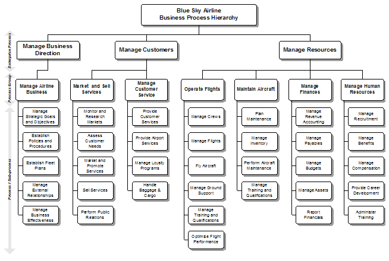
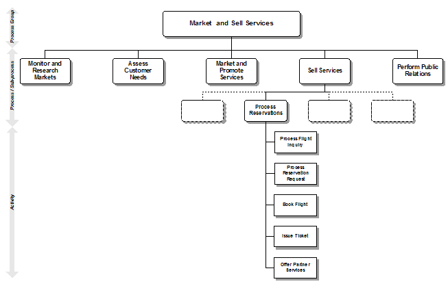
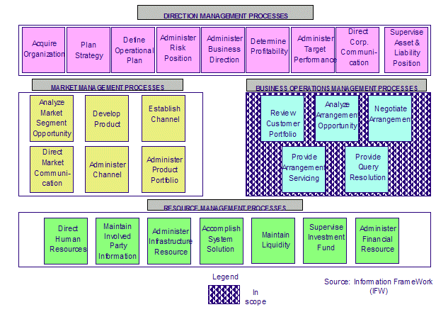
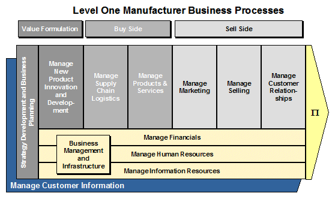
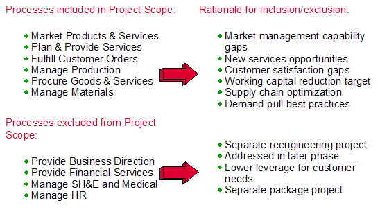
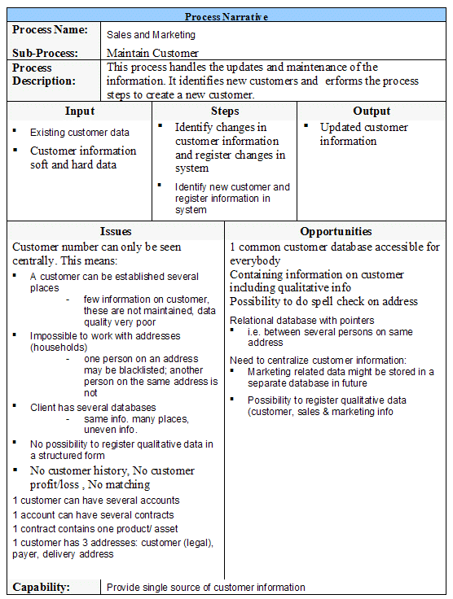

| Example: Process Identification |
 |
|
| Related Elements |
|---|
In the examples below, these process hierarchy diagrams are notated to show the various levels of decomposition (Enterprise, Process Groups, Process, Sub-process, Activity). Process Hierarchy Diagram  Process Hierarchy Diagram – Activity Level  Block Diagram This example shows the processes (verb-object) that support the business management functions (noun phrase with the word "management").  Value Chain Diagram The value chain diagram shows the flow of the processes that are key to providing "value-add" to customers.
 This is a simple way to represent the processes. This could be included in a statement of work. It lists the processes and sub processes that are in scope of the engagement. This notation is normally used when the time and budget available for developing the “Process Identification” is limited. The following is an example of the List notation showing the key processes that are in scope of the engagement with the reasons for the inclusion. The processes that are not in scope are also listed along with the reasons for exclusion.
 The following is a Process Narrative notation example that describes the supporting information and details of the sub-process. This example uses the template provided in this work product:
 |
| © Copyright IBM Corp. 1987, 2012 All Rights Reserved Property of IBM These materials are intended only for use as part of an IBM engagement |